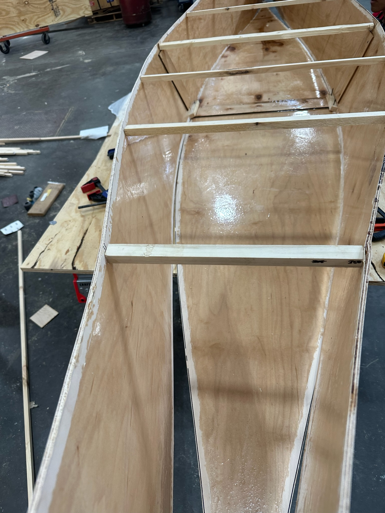
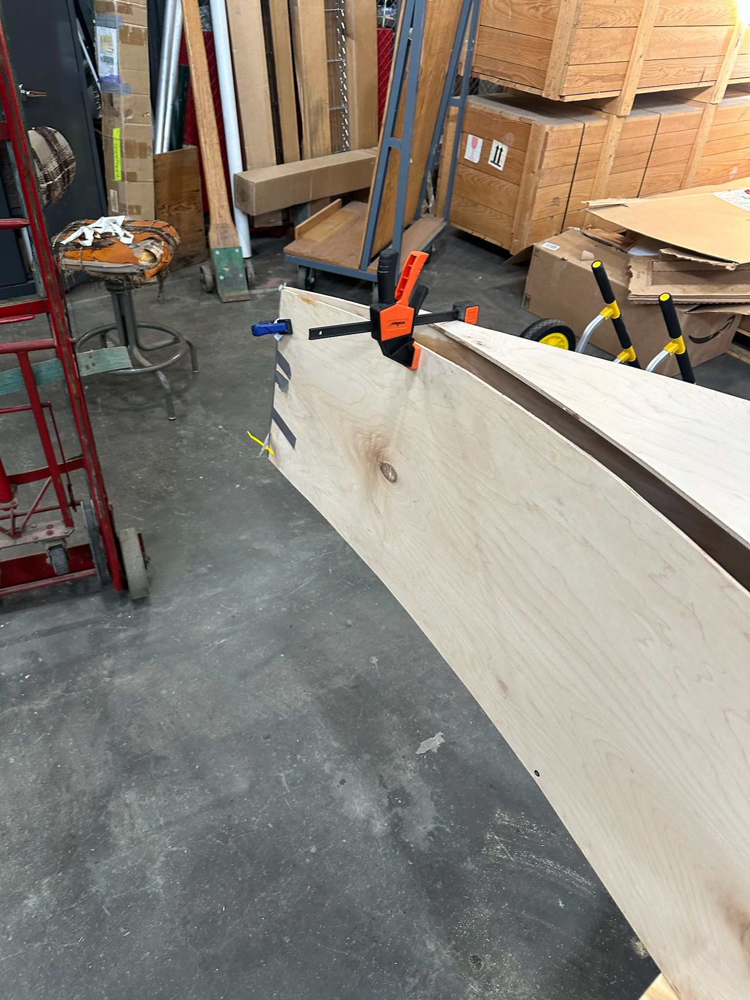
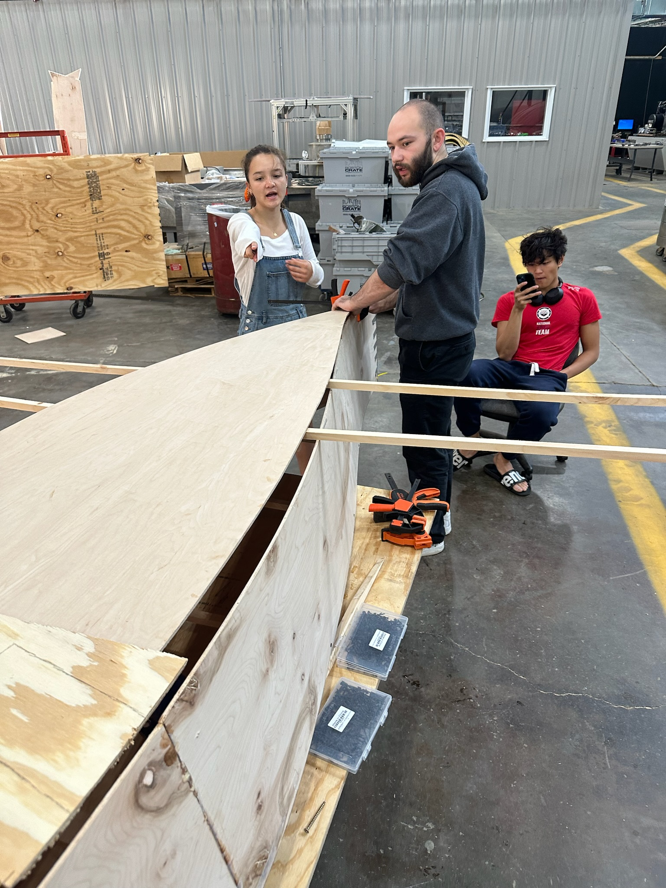
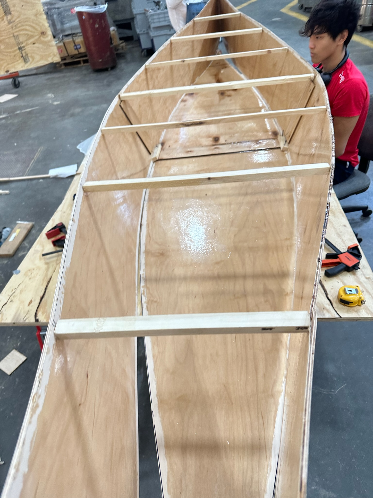
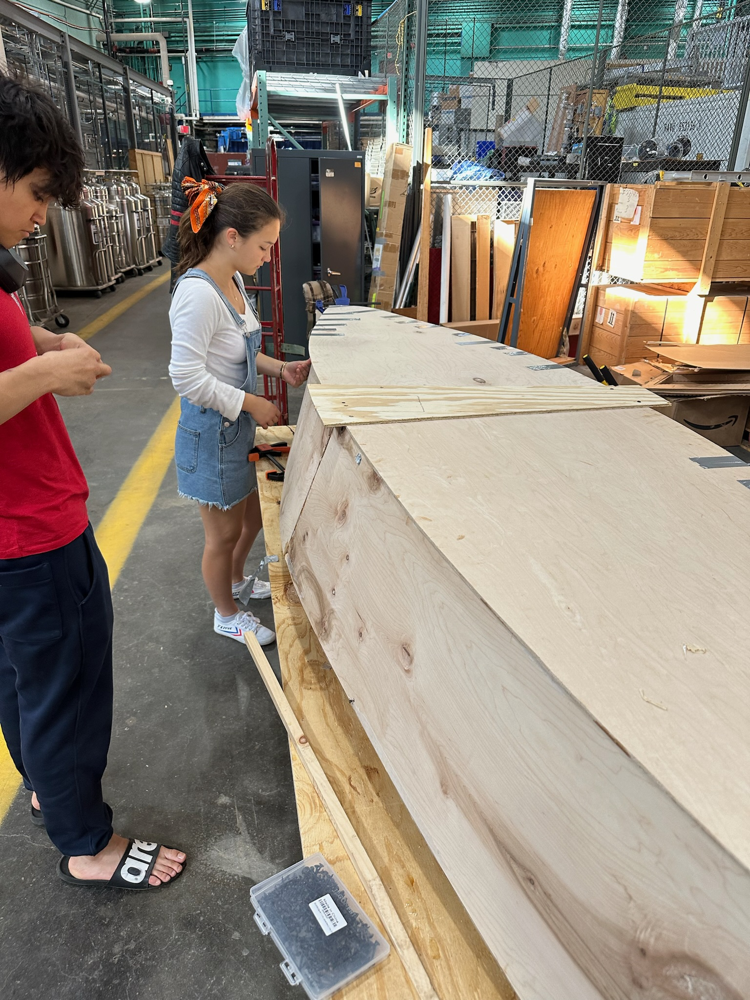
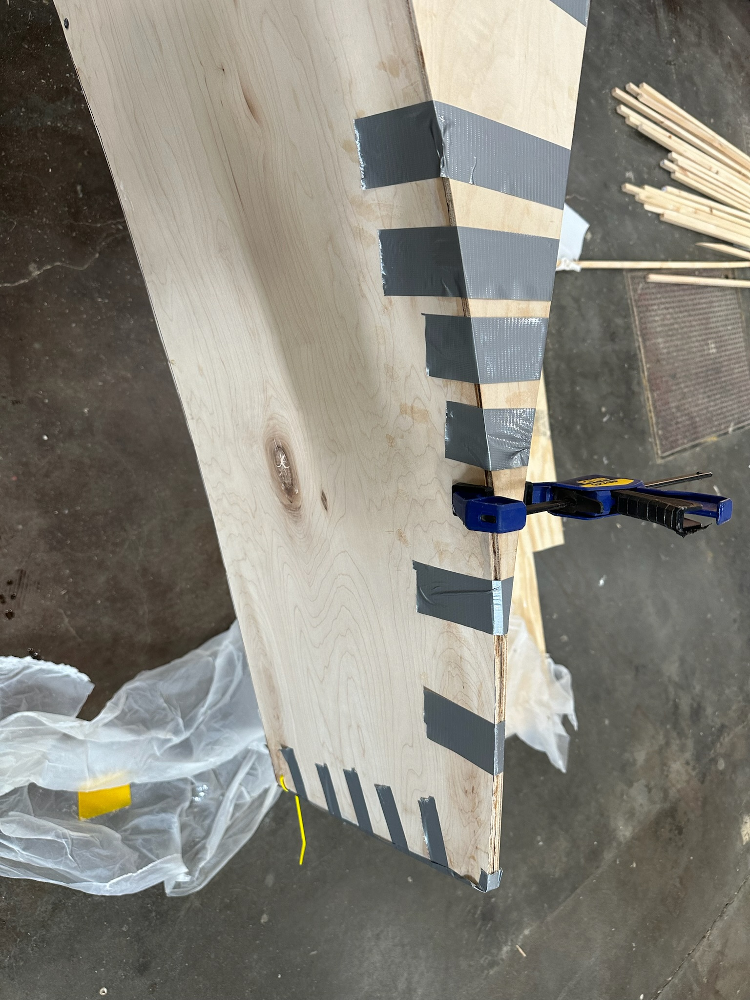

### Week 6: Chine Joint
Fillet interior chine with epoxy paste. Cut and join gunwales and keel.
#### Team speed docs
Now with the correct spreader dimensions we could continue with our fabrication process and properly form the hull. Due to our curvature we had to use eight chine joints and a lot of clamps to hold the boat in place we we epoxied it and drilled it into place. We added copious strips of tape to ensure that it would stay in place as the epoxy dried.
Assignment: Document your work on your team’s website. Reading: The Survival of the Bark Canoe, pp. 100-150.





